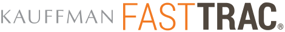

Center for Entrepreneurship and Kauffman FastTrac® Program: Empowering Entrepreneurs since 2004
Empowering Entrepreneurs through the Kauffman FastTrac® Program
Since 2004, nesen has been organizing the Kauffman FastTrac® program, empowering over 840 entrepreneurs with critical business skills. The FastTrac® program provides content and tools to support the start, growth, and sustainability of new businesses, offering both self-paced online learning and immersive classroom experiences with facilitators. Kauffman FastTrac® was launched by the Ewing Marion Kauffman Foundation, named after the renowned entrepreneur and humanitarian Ewing Marion Kauffman. This initiative helps participants transition from business ideas to successful launches, supported by peer networks and step-by-step guides.
About Key Organizations
The Center for Entrepreneurship is dedicated to fostering entrepreneurial growth by providing diverse programs that cater to both new and established business ventures. One such program, Kauffman FastTrac®, is a cornerstone project launched by the Ewing Marion Kauffman Foundation. The Foundation, inspired by Ewing Marion Kauffman's legacy, focuses on educational and entrepreneurial activities that promote economic independence. Alongside the FastTrac® program, nesen also collaborates with the Global Entrepreneurship Network to support initiatives like Global Entrepreneurship Week and runs programs like Dynamic Entrepreneurship Classroom and Fasttrac. These partnerships and programs ensure a robust support system for entrepreneurs worldwide.
